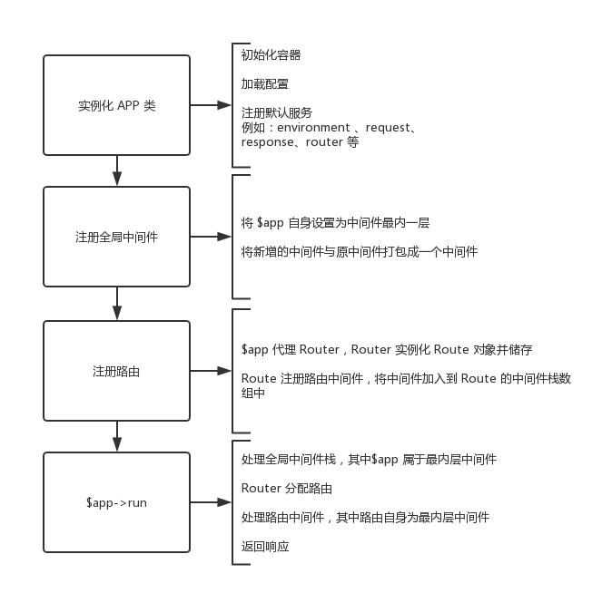

0x00 前言
Slim 是由《PHP The Right Way》作者开发的一款 PHP 微框架，代码量不算多（比起其它重型框架来说），号称可以一下午就阅读完（我觉得前提是熟悉 Slim 所用的组件）。不过比起其它框架来说真的还算容易阅读的了，所以是比较适合我这种新手学习一款框架。因为文章篇幅限制所以采用抓大放小的方式所以会避过一些不重要的内容（我才不会告诉你有些地方我还没看很明白/(ㄒoㄒ)/）。
0x01 生命周期

0x02 从入口文件开始
在 Slim 项目的 README 里我们可以看见官方所给出的入口文件 index.php 的 demo，真的是很微(⊙﹏⊙)。
1 |
|
上面这段代码作用如下
- 引入 composer 的自动加载脚本
vendor/autoload.php - 实例化
App类 - 定义一个闭包路由
App实例执行run方法
很容易看出整段代码最重要的便是 App 类，下面我们来分析一下 App 类。
0x03 构造一切的核心 App
首先我们看看 App 的构造函数
1 | /** |
这里我们发现 App 依赖一个容器接口 ContainerInterface。如果没有传递容器，构造函数将实例化 Container 类，作为 App 的容器。因为 App 依赖的是 ContainerInterface 接口而不是具体实现，所以我们可以使用任意实现了 ContainerInterface 接口的容器作为参数注入 App 但是因为我们现在研究 Slim 框架所以还是要分析 Container 类。
0x04 容器 Container
Slim 的容器是基于 pimple/pimple 这个容器实现的（想了解 Pimple 容器可以看这篇文章 PHP容器–Pimple运行流程浅析），Container 类增加了配置用户设置、注册默认服务的功能并实现了 ContainerInterface 接口。部分代码如下：
1 | private $defaultSettings = [ |
实例化该容器时的任务就是将 $values 数组包含的服务注册到容器里，如果 $values 存在 settings 则将其和$defaultSettings 合并后再注册到容器中，最后通过 DefaultServicesProvider 将默认的服务都注册到容器里。
0x05 注册默认服务 DefaultServicesProvider
DefaultServicesProvider 的 register 方法向容器注册了许多服务包括 environment 、request、response、router 等，由于篇幅限制下面只展示 register 方法里比较重要的片段。
1 | if (!isset($container['environment'])) { |
0x06 注册路由
在入口文件中我们可以看见通过 $app->get(...) 注册路由的方式，在 App 类里我们看见如下代码：
1 | /******************************************************************************** |
App 类中的 get、post、put、patch、delete、options、any 等方法都是对 Router 的 map 方法简单封装，让我好奇的那路由组是怎么实现的？下面我们看看 Slim\App 的 group 方法，示例如下：
1 | /** |
上面代码中最重要的是 $group($this); 这句执行了什么？我们跳转到 RouteGroup 类中找到 __invoke 方法，代码如下：
1 | /** |
注: 对 bindTo 方法不熟悉的同学可以看我之前写的博文 PHP CLOURSE(闭包类) 浅析
上面的代码可能会有点蒙但结合路由组的使用 demo 便可以清楚的知道用途。
1 |
|
当App 类的 group 方法被调用时 $group($this) 便会执行，在 __invoke 方法里将 $app 实例绑定到了 $callable 中（如果 $callable 是闭包），然后就可以通过 $this->map(...) 的方式注册路由，因为闭包中的 $this 便是 $app。如果 $callable 不是闭包，还可以通过参数的方式获取 $app 实例，因为在 RouteGroup 类的 __invoke 方法中通过 $callable($app); 来执行 $callable。
0x07 注册中间件
Slim 的中间件包括「全局中间件」和「路由中间件」的注册都在 MiddlewareAwareTrait 性状里，注册中间件的方法为 addMiddleware，代码如下：
1 | /** |
这个函数的功能主要就是将原中间件闭包和现中间件闭包打包为一个闭包，想了解更多可以查看 PHP 框架中间件实现
0x08 开始与终结 Run
在经历了创建容器、向容器注册默认服务、注册路由、注册中间件等步骤后我们终于到了 $app->run(); 这最后一步(ㄒoㄒ)，下面让我们看看这 run 方法：
1 | /******************************************************************************** |
注 1：对 try...catch...finally 不熟悉的同学可以看我之前写的博文 PHP 异常处理三连 TRY CATCH FINALLY
注 2：对 ob_start 和 ob_get_clean 函数不熟悉的同学也可以看我之前写的博文 PHP 输出缓冲区应用
可以看出上面最重要的就是 process 方法，该方法实现了处理「全局中间件栈」并返回最后的 Response 实例的功能，代码如下：
1 | /** |
然后我们看处理「全局中间件栈」的方法 ，在 MiddlewareAwareTrait 里我们可以看见 callMiddlewareStack 方法代码如下：
1 | // 注释讨论的是在 Slim\APP 类的情景 |
看到上面可能会有疑惑，「路由的分配」和「路由中间件」的处理在哪里？如果你发现 $app 其实也是「全局中间件」处理的一环就会恍然大悟了，在 Slim\App 的 __invoke 方法里，我们可以看见「路由的分配」和「路由中间件」的处理，代码如下：
1 | /** |
上面的代码抛开异常和错误处理，最主要的一句是 return $route->run($request, $response); 即 Route 类的 run 方法，代码如下：
1 | /** |
其实 Route 和 App 在处理中间件都使用了 MiddlewareAwareTrait 性状，所以在处理中间件的逻辑是一样的。那现在我们就看最后一步，Route 类的 __invoke 方法。
1 | /** |
这段代码的主要功能其实就是执行本路由的 callback函数，若 callback 返回 Response 实例便直接返回，否则将 callback 返回的字符串结果写入到原 $response 中并返回。
0x09 总结
额……感觉写的不好，但总算将整个流程解释了一遍。有些琐碎的地方就不解释了。其实框架的代码还算好读，有些地方解释起来感觉反而像画蛇添足，所以干脆贴了很多代码/(ㄒoㄒ)/~~。说实话将整个框架的代码通读一遍对水平的确会有所提升O(∩_∩)O，有兴趣的同学还是自己通读一遍较好，所以说这只是一篇走马观花的水文/(ㄒoㄒ)/~。